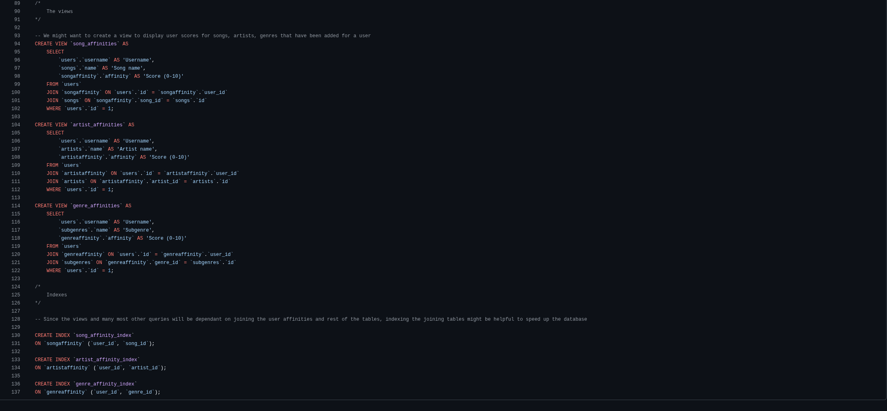

This database was designed as the final project for Harvards CS50SQL course
The purpose of my database is is to accommodate data about user preferences with songs,
artists and genres and also data about the songs to be used in an app where user can vote up/down songs
and/or block genres or artists altogether. The database data, especially the affinities would be used to weigh
the songs and adjust probabilities how often (if at all) they would be played.
